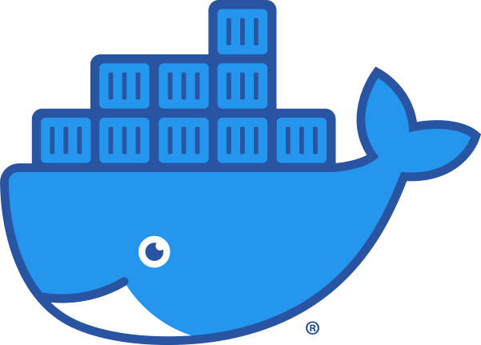

Nix让你的团队成员不再受环境问题困扰
2024.10https://xieby1.github.io/nix_config/docs/slides/2023.nix-env.slides.html
1.2 Nix/NixOS发展简史
- 2006: 博士论文[1]
- 2012: Github[2,3]
- 2021: 100%可重现[4]
- [1]: Dolstra, Eelco. “The purely functional software deployment model.” (2006).
- [2]: https://github.com/NixOS/nixpkgs
- [3]: https://github.com/NixOS/nix
- [4]: Nixos-unstable’s iso_minimal.x86_64-linux is 100% reproducible! https://discourse.nixos.org/t/nixos-unstable-s-iso-minimal-x86-64-linux-is-100-reproducible/13723
1.5
 Nix/NixOS vs
Nix/NixOS vs
 APT/Ubuntu
APT/Ubuntu
| Nix/NixOS | APT/Ubuntu | |
|---|---|---|
| 使用用户 | root(system wide), 普通用户 | 仅root(system wide) |
| 版本升级 | 随时升级channel | 跨版本升级难 |
| 安装位置 | 全局/各用户：/nix/store配合符号链接 | 全局：/bin, /usr, … |
| 包的版本 | 能够同时安装多个版本的包 | 单一版本 |
| 包的数量 | >80,000[1] | 72,514[2] |
| 更新速度 | 每天几百个commits[3] | - |
| 开放程度 | 开放、可去中心化 | Canonical Ltd维护 |
| 历史回滚 | 支持 | - |
| 交互方式 | Declarative/Imperative | 仅Imperative |
- [1]: https://search.nixos.org/packages
- [2]:
apt list | wc -l - [3]:
git log --date=short --pretty=format:%ad | sort | uniq -c
1.6
Nix/NixOS vs
Docker
| Nix/NixOS | Docker | |
|---|---|---|
| 确定性 | 是 (确定性derivation) | 否 (非确定性layer) |
| 融入现有环境 | 轻松：nix-env/nix-shell | 难：本质各种隔离，bind/network/… |
4.3 香山的切片流程

- 十几个流程
- 每个流程都有较高门槛
- 文档驱动
- 每个人的环境都不一样，没办法完全自动化，只能文档
- 但文档不足